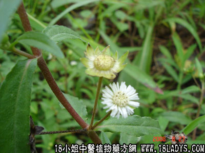

古籍名：鳢肠《唐本草》。
植物名：鳢肠。
别名：旱莲草、墨斗草、白花蟛蜞菊、白花蟛蜞、黑墨草、墨汁旱莲草、鳢肠草、莲蓬草。
生长环境：本品为一年生草本，平原地区极为常见，喜生于湿地上、田基、路旁或休闲的田中。
分布：产于全球的温带地，广东中部和北部、东部到处皆有。
入药部分：全草。
采集期：全年有产，夏秋为宜。
自采地点：荒地。
性味：性凉、味平淡。
功能：清肝肺热、明目养阴、散瘀。
主治、用量和用法：1、肺燥吐血：干用5钱至一两，煎水服；2、小儿疳积发热，配伍用；3、香港脚：生用适量，捣烂敷患处；4、脚边虫子蛀食痕痒：用法同上。
验方1：（治肺燥咳方）旱莲草1两、猪瘦肉2两、蜜枣4个、清水三碗，煎成一碗服。
（方解）旱莲草清肝润肺，蜜枣甘以润燥、佐以猪瘦肉煎汤，更为滋润可口，治燥咳甚效。
（方歌）肺金燥咳有验方，旱莲草煲煮肉汤，蜜枣四枚须加入，润燥滋金肺自安。
验方2：（治小儿疳积）旱莲草5钱、独脚金2钱、清水三碗，煎成半碗服。
（方解）疳积为病，小儿最多，大抵由于饥饱失宜，多食生冷肥滞之品、以致损伤脾胃而成。方中旱莲草平肝；独脚金理脾开胃而消谷食，脾胃健运，疳积自消。
（方歌）小儿疳积不用愁，白花蟛蜞荒野求，独脚金来同煎服，健脾开胃乐悠悠。
验方3：（治热眼方）旱莲草1两、黄豆5钱、或猪瘦肉2两、清水四碗，煎成两碗，作汤服。
（方解）旱莲草清热养阴、黄豆性凉清肺，加入猪瘦肉营养之品，对治热眼痛有效。
（方歌）肝经热郁视不明，旱莲草合黄豆成，或入瘦肉同煎服，清肝解热眼复明。
验方4：（治吐血不止方）生旱莲草8两，取汁加热，加蜜糖2两冲服。
（方歌）吐血不止心勿忙，旱莲草汁炖蜜糖，平肝润肺胃不逆，血自为经气自藏。
参考资料：《广东省中医验方交流汇编》内载治小便下血方：旱莲草、车前草、取汁每日空心温服一杯。
治新吐血验方：鲜旱莲草4两，擂烂，冲童便饮，家生柏子共擂烂同煎服尤效。
本文解释权归中药大全，本文地址：https://www.daquan.com/post/1611.html